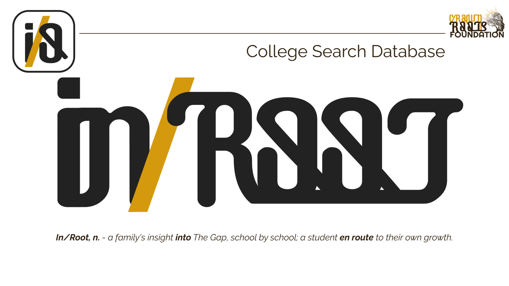

Part of I/O · College Search Database
Academics is the path. Athletic scholarships are a lottery — academic aid is obtainable. This tool shows Pocono families the truth about what college actually costs.

Too many kids on the mountain hear "I'm going to the League" and build their entire future around an athletic scholarship that statistically won't come. Meanwhile, academic aid — grants, merit scholarships, need-based packages — is exponentially more obtainable and goes unclaimed every year. The problem isn't a lack of opportunity. It's a lack of information.
College websites advertise generous aid packages. What they don't make clear is The Gap — the amount families must actually find through savings, work, or debt after all grant aid is applied. For Pocono families earning $30,000–$48,000, this gap can mean the difference between graduating and dropping out. Our database makes The Gap impossible to miss.
Select your family income bracket. The database instantly re-sorts schools and recalculates The Gap at each institution.
Results are sorted by lowest gap first — not by prestige, not by sticker price. Schools that actually meet your need rise to the top.
Check up to 3 schools and compare them side-by-side against the ESU baseline — what your family would pay, and what you'd save.
Ten schools a typical Crown Roots student can get into and a working Pocono family can pay for. See the list
Every school gets a clear severity rating based on what your family would need to find beyond grant aid:
Low Gap ($0 – $2,500/year) — This school is likely affordable for your family.
Medium Gap ($2,501 – $7,500/year) — Budget carefully. You'll need to cover the gap beyond aid.
High Gap ($7,501 – $15,000/year) — Significant out-of-pocket cost. Over 4 years, you'd need to find $30,000–$60,000 beyond aid.
Critical Gap ($15,001+/year) — Danger zone. Many students in this situation don't finish their degree.
For a family earning $30,000–$48,000, the numbers can be counterintuitive:
| Elite Private (e.g. Stanford) | PA State School (e.g. Penn State) | Regional (e.g. East Stroudsburg) | |
|---|---|---|---|
| Sticker Price | $87,225 | $36,962 | $26,000 |
| Net Cost | $2,725 | $18,200 | $14,800 |
| + Travel from Poconos | $2,400 | $400 | $200 |
| True Annual Cost | $5,125 | $18,600 | $15,000 |
| 4-Year Total | $20,500 | $74,400 | $60,000 |
| The Gap | $0 | $8,200/yr | $6,100/yr |
| School | Owed per year | Degrees worth pursuing | Drive | |
|---|---|---|---|---|
| 1 | Pitt-Johnstown (PA)Lowest bill we found. Pitt matches the Pell Grant dollar for dollar.Degrees worth pursuing: Computer, electrical, mechanical, chemical, and civil engineering; computer science; finance; accounting | $7,411* | Computer, electrical, mechanical, chemical, and civil engineering; computer science; finance; accounting | 4 hr 15 min |
| 2 | Youngstown State (OH)Charges Pennsylvania students almost the Ohio price. Strong engineering.Degrees worth pursuing: Electrical, chemical, mechanical, civil, and industrial engineering; computer science; nursing; accounting | $10,966 | Electrical, chemical, mechanical, civil, and industrial engineering; computer science; nursing; accounting | 4 hr 45 min |
| 3 | Slippery Rock (PA)Best graduation rates on the list.Degrees worth pursuing: Safety management; civil and mechanical engineering; nursing; accounting; finance | $8,666 | Safety management; civil and mechanical engineering; nursing; accounting; finance | 5 hr |
| 4 | Commonwealth University (Bloomsburg) (PA)Large nursing program close to home.Degrees worth pursuing: Nursing; computer science; business; special education; social work | $8,732 | Nursing; computer science; business; special education; social work | 1 hr 30 min |
| 5 | PennWest (PA)Clear scholarship amounts by GPA, so families know where they stand.Degrees worth pursuing: Nursing; mechatronics and electrical engineering technology; accounting; finance; art | $8,747 | Nursing; mechatronics and electrical engineering technology; accounting; finance; art | 4 to 5 hr 30 min |
| 6 | Indiana University of Pennsylvania (PA)Safety sciences graduates earn as much as engineers.Degrees worth pursuing: Safety sciences; nursing; computer science; finance; accounting; design | $7,700 to $9,800* | Safety sciences; nursing; computer science; finance; accounting; design | 4 hr 30 min |
| 7 | East Stroudsburg (PA)Home. Computing and nursing are the programs to look at.Degrees worth pursuing: Computer science; nursing; special education; social work | $10,125 | Computer science; nursing; special education; social work | Local |
| 8 | University of Akron (OH)Paid co-op built into engineering. Costs more than Youngstown State.Degrees worth pursuing: Chemical, mechanical, civil, and biomedical engineering; finance; accounting | $15,827 | Chemical, mechanical, civil, and biomedical engineering; finance; accounting | 5 hr 30 min |
| 9 | Daemen University (NY)A private college whose aid brings it under $15,000.Degrees worth pursuing: Nursing; health science paths toward physical therapy and physician assistant | $14,325 | Nursing; health science paths toward physical therapy and physician assistant | 4 hr 45 min |
| 10 | Kutztown University (PA)Our creative pick.Degrees worth pursuing: Communication design; teacher education; social work | $9,596 | Communication design; teacher education; social work | 1 hr |
We track alumni who used academics — not athletics — to change their family's trajectory. Students like Kiaya Jones and Daysha Mobley: 0 EFC kids who proved that the classroom is the way out. Their stories become the roadmap for the next generation of Mountain students.
This database is part of Crown Hub's Access to Information pillar — delivering college choice info, tuition guidance, and alumni footprints directly to parents, guardians, and students who need it most.
For student athletes exploring college through sports. Understand the real numbers: fewer than 2% of high school athletes earn athletic scholarships. This portal helps families plan beyond the dream.
For every student. Academic merit aid, need-based grants, and institutional scholarships that are realistically obtainable. This is where the real opportunity lives.
Hidden Value schools with income bracket selector, gap severity ratings, and side-by-side compare tool. ESU baseline visible on every view.
Saved school lists per user. "Schools like this" recommendations. Email alerts when data updates. Net Price Calculator links. PDF export of comparisons.
Integration with actual Net Price Calculators. Application deadline tracking. Crown Hub alumni connections. Financial aid package analyzer — upload your letter for instant analysis.
All data in the college database comes from verified federal and institutional sources:
Federal Integrated Postsecondary Education Data System — tuition, fees, enrollment, financial aid, and graduation rates.
Each school's own calculator, run for one sample family at five incomes. Used for the Crown Top 10 and Hidden Value prices, because published averages lag behind current aid policy.
National Association of College and University Business Officers — endowment data and financial strength indicators.
Manual verification of no-loan policies, acceptance rates, and need-meeting commitments from each institution.
Colleges with endowments above $500,000 per student — including many Ivy League and elite universities — offer no-loan financial aid policies, replacing student loans entirely with grants. For Pocono Mountain families earning $30,000–$48,000, Princeton University has a $0 cost of attendance — Princeton covers tuition, room, board, fees, and a travel allowance through grants with no expected family contribution. This compares to about $11,750 per year on its own calculator at East Stroudsburg University.
The Gap is the out-of-pocket amount a family must cover after all grant aid, scholarships, and institutional aid are applied. For Pocono Mountain families earning $30,000–$48,000, East Stroudsburg University's net price is about $11,750 per year on its own calculator — higher than several elite institutions with large endowments that can fully meet demonstrated financial need, some reducing the cost to $0. Crown Roots Foundation sorts its college database by lowest Gap first.
Yes, often dramatically so. For a Pocono Mountain family earning $30,000–$48,000, Princeton University has a $0 cost of attendance — their financial aid program covers tuition, room, board, fees, and travel with no expected family contribution. This compares to about $11,750 per year on its own calculator at East Stroudsburg University. High-endowment schools have the financial strength to meet 100% of demonstrated need, making their true cost far lower than their sticker price.
The Crown Top 10 is our list of ten colleges that a typical Crown Roots student (a 3.2 to 3.7 GPA and about an 1100 SAT) can realistically get into, that a Pocono family earning under $75,000 can pay for, and that lead to careers our students ask about. We rank on what a sample family would owe the school each year after grants, using each school's own cost calculator, and on what graduates of specific programs earn. Very selective schools that can cost little or nothing are listed separately as Hidden Value Schools.
All figures come from federal and institutional sources: IPEDS (Integrated Postsecondary Education Data System) for tuition and financial aid; each school's own net price calculator for the prices on our school lists; NACUBO for endowment data; and manual institutional verification of no-loan policies.